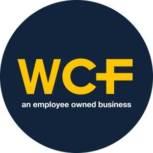
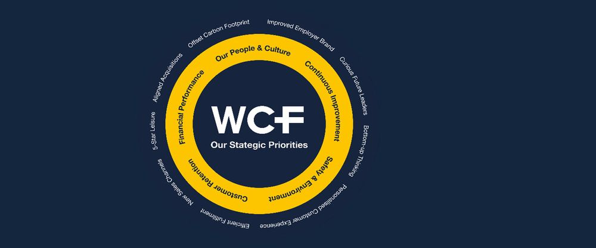

Supporting our Employee Owners Through The Cost of Living Crisis
With many of our employee owners paid by reference to the national living wage, it is important that we support them through these turbulent economic times. So, what has WCF Ltd been doing to support the financial and mental well-being of its key stakeholders who also own the company in which they work?

Take the Real Living Wage Pledge
On 1st June we decided to pay our lowest paid employee owners with reference to the Real Living Wage rather than the National Minimum Wage. This means that as at 1st November there will a £1.40 an hour differential for these colleagues to the lowest legal rate of payment. We will implement the 2022 increase to £10.90, announced on 22nd September, from 1st November rather than taking advantage of the 6-month waiting period. In January 2022 we brought forward the minimum wage increase due to our lowest paid employees by 3 months. We pay all our colleagues (excluding apprentices) the same minimum wage regardless of age.
Energy Bonus
In direct and prompt response to rising energy bills we paid all our colleagues, regardless of role, a flat rate £750 bonus (per full time employee; proportionately less for part time employees) in April in response to the cost-of-living crisis. Comments received from employee owners included:
“Wonderful surprise, thank you for caring”
“I’ve said it before, and I will say it again… WCF is the company that just keeps on giving”
“What a kind and thoughtful gesture”
“Thank you very much, massively appreciated”
“Thank you WCF. Another show of caring and appreciation for your great teams. I have never been prouder to be a small part of such a great company”
“Thank you for looking after all at WCF”
“Awesome gesture, thanks for the support WCF”
“This shows what WCF is about, it’s people. A huge thank you to the Board”
“Above and beyond again, thank you very much”
Employee Ownership Dividend
Directly linked to our 21/22 financial performance and our profit share commitment, our eligible full-time employees will receive a gross payment of not less than £1,000 in November (proportionately less for part time employees and those that started with us between 1st June 2021 and 31st May 2022). This is paid at the end of November so that employees are able to use the payment in time for Christmas. Employee owners will also benefit from a 73p a share dividend on all shares owned directly or in trust on their behalf at the end of November.
Financial Well-being Program
Introduced during the pandemic, and extended due to the current situation, all our employees are eligible to apply for an interest-free loan to our financial well-bring program, there to support them in times of emergency. We then negotiate a fair and affordable repayment program with them to ensure that they do not continue to be financially disadvantaged but adopt a responsible approach to ensure that they do not borrow more than they can truly afford. Repayment terms depend on the amount borrowed, the number of WCF share held directly or in trust on behalf of that employee, and length of service.
WCF Rewards
Re-launched in October, our employees can now benefit from even more discounts or cashback at leading supermarkets and hundreds of high street retailers which should put additional cash in their pockets when they need it most. There is also access to lots of well-being tips, including financial budgeting tools, meditation, workouts and nutritional advice.
Additional Ways to Earn
Our paid recognition and improvement schemes such as ‘Above & Beyond’ and ‘People Like Us’ referral schemes offer our colleagues the opportunity to top up their basic pay with additional rewards.
Employee Assistance Program
Our EAP offers our employee owners 24/7 access to confidential well-being advice and support, including counselling, financial and legal advice. We can also provide specialist one-to-one counselling, paid for by the company, for those in need of more urgent interventions.
Funded Uniforms
We have introduced additional funded uniforms around the business for those not in customer facing roles so that those people can benefit from reduced costs of coming to work as well as those people required to wear a uniform as part of their role.
Colleague Discounts
We offer a wide range of colleague discounts across the group so that our employee owners can benefit from reduced price clothing, pet care, horticultural/amenity products and stays in one of our three campsites, as well as competitive prices on home heating oil. We have recently removed the 6-month waiting period for such discounts to be enacted to ensure that everyone can benefit from Day 1 of their employment.
Advice
Using our employee engagement app we share tips on how to save money and conserve energy.
Flexible Working
We operate a variety of flexible and hybrid working models for all colleagues being especially considerate of those who may have additional childcare or caring responsibilities.
As a progressive employer, owned by its employees, we are always looking for way to improve our benefits and support for our employee owners so if you can think of something that we haven’t then please don’t hesitate to let us know by commenting below. We’ll be undertaking check-in surveys through Hive on a regular basis to understand how your personal circumstances are evolving. These surveys are confidential but what you tell us can directly help us shape our program of future benefits.
< Previous Article
Benefits of Employee Ownership
